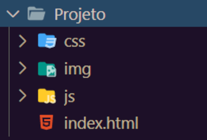
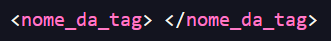
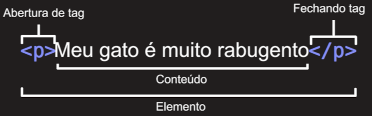
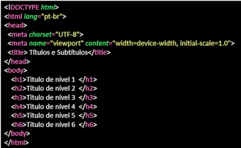
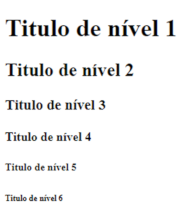

Estrutura dos arquivos em um projeto Web
Para todo projeto de software existem algumas recomendações, ao construir um Web Site ou uma Aplicação Web vamos utilizar vários tipos de arquivos diferentes. Nomes de arquivos e pastas dever ser escritos em letras minúsculas, sem espaços e sem caracteres especiais. É recomendado que exista uma página inicial dentro de um arquivo chamado index.html. Dentro da pasta do projeto é recomendado que sejam criadas mais algumas pastas com a finalidade de organizar os arquivos do projeto.
Documento HTML
A linguagem HTML (Hypertext Markup Language) tem o objetivo de formatar textos através de marcações especiais denominadas tags. Documentos HTML são arquivos de texto ASCII. Todos os arquivos devem possuir a extensão .html.
O HTML não faz diferença entre letras minúsculas ou maiúsculas em suas marcações, mas recomenda-se usar as tags em letras minusculas.
Sintaxe do HTML
A sintaxe geral de uma tag é :
E de modo geral as tags aparecem em pares.
As tags podem possuir atributos, cada atributo tem um nome e uma funçao diferente. Na figura abaixo temos a tag img com o atributo src que serve para indicar a origem da imagem e a tag alt onde escrevemos um texto alternativo que aparece na tela quando a imagem não é carregada.

Estrutura Básica de um aquivo HTML
Na figura abaixo temos a estrutura básica de um arquivo HTML.

Caso queira saber mais clique na imagem abaixo ou aponte a camera do seu celular para o qrcode.


Algumas tag básicas
Tag para Títulos
As tags abaixo sever para criar títulos, os títulos possuem uma hierarquia.

Tag para Paragrafos
A tag abaixo sever para criar um paragrafo
Negrito, itálico, marcar texto, sobrescrito e subscrito
Negrito e Itálico
Para deixar um texto em negrito é utilizada a tag strong que da um significado semântico.
Pra deixa um texto em itálico usa-se a tag em o que mostra que queremos dar ênfase ao texto.
Marcador de texto
Utiliza-se a tag mark para delimitar um recho de texto para marcar.
Sobrescrito e subscrito
A tag sub coloca o um texto em subscrito, exemplo H2SO4. A tag sup coloca um texto em sobrescrito, exemplo X3+Y2
Icone da Pagina
Para colocar um icone na página o ideal é ter um arquivo de 16 x 16 pixels ou 32 x 32 pixels e utilizamos a tag link dentro do head.